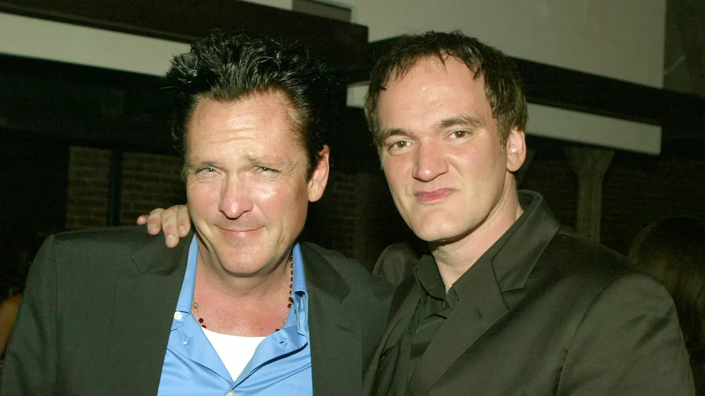
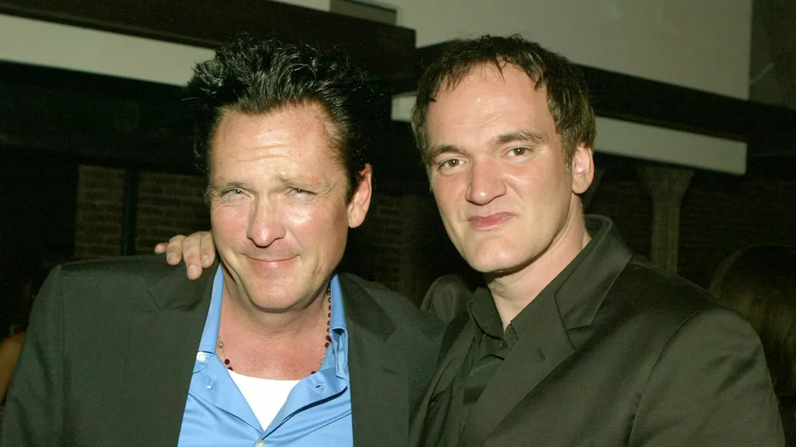
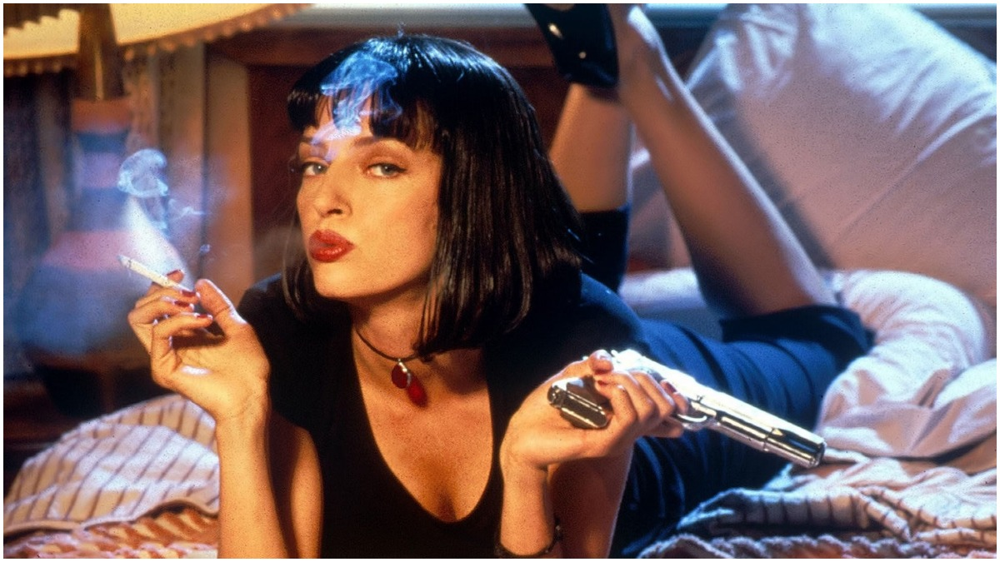
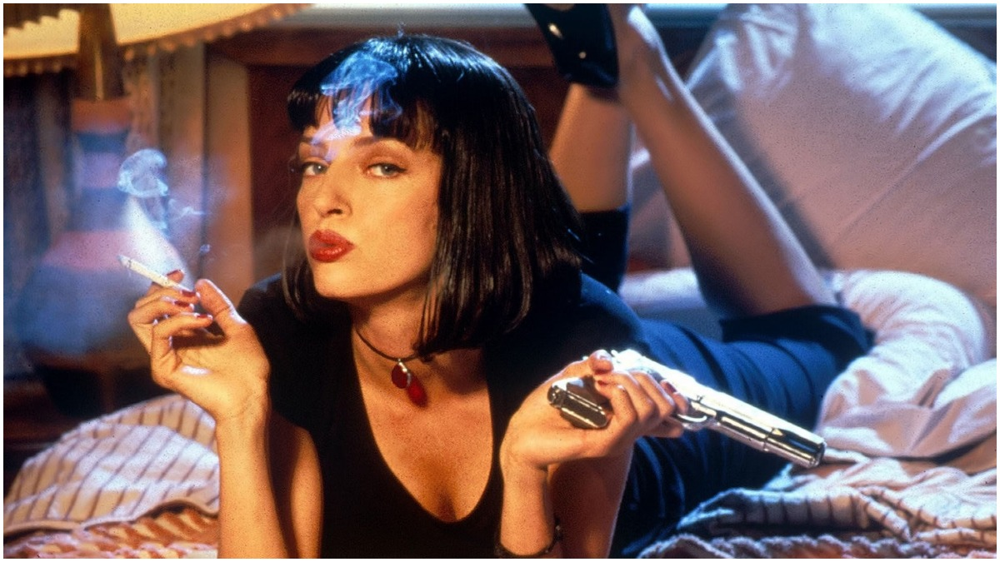

 

Reservoir Dogs (1992)
Budget: ~$1.2 million
Worldwide Gross: ~$2.9 million
Stars: Harvey Keitel, Tim Roth, Michael Madsen, Steve Buscemi, Chris Penn, Lawrence Tierney
Summary
Tarantino’s debut film is a stripped-down crime thriller centered on a diamond heist that collapses before it even begins. The surviving criminals regroup in a warehouse, bleeding, panicked, and increasingly suspicious of one another. What follows is a tense unraveling of loyalty and betrayal, full of sharp dialogue and sudden violence that introduced Tarantino’s now-signature style.
Pulp Fiction (1994)
Budget: ~$8.5 million
Worldwide Gross: ~$213 million
Stars: John Travolta, Samuel L. Jackson, Uma Thurman, Bruce Willis, Ving Rhames
Summary
A cultural landmark of the ’90s, Pulp Fiction weaves together intersecting stories involving gangsters, a boxer, a crime boss’s wife, and a pair of small-time thieves. Its nonlinear structure keeps audiences off balance while blending dark humor, pop-culture-laced conversations, and bursts of shocking violence. The film’s iconic scenes and unconventional storytelling redefined crime cinema and made Tarantino a household name.
Jackie Brown (1997)
Budget: ~$12 million
Worldwide Gross: ~$74 million
Stars: Pam Grier, Samuel L. Jackson, Robert Forster, Bridget Fonda, Michael Keaton
Summary
Based on Elmore Leonard’s Rum Punch, the film follows Jackie Brown, a flight attendant caught smuggling money for a gun runner. With the law closing in and her employer growing suspicious, she carefully manipulates both sides in a dangerous double-cross. More patient and character-driven than Tarantino’s previous work, Jackie Brown is a soulful, mature story about survival, trust, and second chances.
Kill Bill: Vol. 1 (2003)
Budget: ~$30 million
Worldwide Gross: ~$181 million
Stars: Uma Thurman, Lucy Liu, Vivica A. Fox, Daryl Hannah, David Carradine
Summary
The Bride, once an elite assassin, awakens from a four-year coma and begins a bloody quest for revenge against the team that betrayed her. Vol. 1 is a whirlwind of stylized violence inspired by samurai films, kung fu cinema, spaghetti westerns, and anime. Fast, brutal, and visually bold, it establishes one of Tarantino’s most iconic characters.
Kill Bill: Vol. 2 (2004)
Budget: ~$30 million
Worldwide Gross: ~$154 million
Uma Thurman, David Carradine, Michael Madsen, Daryl Hannah
Summary
While the first volume focuses on action, Vol. 2 slows down to explore The Bride’s emotional journey and backstory. Her path to vengeance continues, but with deeper character development, western-inspired showdowns, and a nuanced examination of her relationship with Bill. The film blends quieter moments with tense confrontations, wrapping up the saga with dramatic finality.
Death Proof (2007)
Budget: ~$30 million
Worldwide Gross: ~$31 million
Stars: Kurt Russell, Zoë Bell, Rosario Dawson, Sydney Tamiia Poitier, Vanessa Ferlito
Summary
Released as half of the double-feature Grindhouse, Death Proof is Tarantino’s homage to ’70s exploitation cinema. It follows Stuntman Mike, who uses his modified “death-proof” car to terrorize women on the road—until he picks the wrong group to target. Featuring long conversational stretches, sudden shocking violence, and exhilarating practical car chases, the film both celebrates and subverts grindhouse tropes.
Inglourious Basterds (2009)
Budget: ~$70 million
Worldwide Gross: ~$321 million
Stars: Brad Pitt, Christoph Waltz, Mélanie Laurent, Diane Kruger, Michael Fassbender
Summary
Tarantino reimagines World War II in this bold, darkly funny revenge fantasy. A squad of Jewish American soldiers spreads fear across Nazi-occupied France through brutal guerrilla tactics, while a young cinema owner plots her own devastating act of rebellion. The intersecting storylines collide in an explosive, history-rewriting finale. Suspenseful dialogue and bursts of violent action showcase Tarantino at his most audacious.
Django Unchained (2012)
Budget: ~$100 million
Worldwide Gross: ~$426 million
Stars: Jamie Foxx, Christoph Waltz, Leonardo DiCaprio, Kerry Washington, Samuel L. Jackson
Summary
Set in the pre–Civil War South, the film follows Django, a freed slave who teams up with a German bounty hunter to rescue his wife from a cruel plantation owner. Equal parts spaghetti western, revenge epic, and social commentary, the movie combines humor, sharp dialogue, and uncompromising violence. It’s one of Tarantino’s most ambitious stories and his highest-grossing film.
The Hateful Eight (2015)
Budget: ~$44 million
Worldwide Gross: ~$156 million
Stars: Samuel L. Jackson, Kurt Russell, Jennifer Jason Leigh, Walton Goggins, Tim Roth
Summary
After the Civil War, a blizzard traps eight strangers inside a Wyoming cabin—bounty hunters, criminals, soldiers, and drifters with dangerous secrets. As tensions rise, alliances shift, lies unravel, and violence feels inevitable. With its stage-play structure, long dialogue sequences, and bursts of shocking bloodshed, The Hateful Eight is a claustrophobic chamber drama steeped in distrust and vengeance.
Once Upon a Time in Hollywood (2019)
Budget: ~$90 million
Worldwide Gross: ~$377 million
Stars: Leonardo DiCaprio, Brad Pitt, Margot Robbie, Al Pacino, Emile Hirsch
Summary
Set in 1969 Los Angeles, the story follows fading TV actor Rick Dalton and his stunt double Cliff Booth as they navigate a shifting Hollywood landscape. Their fictional journey unfolds alongside real historical events—most notably the rise of the Manson Family. Blending comedy, nostalgia, and bursts of brutal violence, Tarantino crafts a bittersweet love letter to the final days of Hollywood’s golden age, capped with a revisionist twist on a dark historical moment.